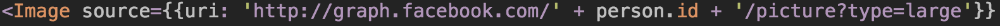

RN updates
This is part 3 of 4 of the React Native series.
Part 1 - Try RN | Part 2 - RN/Firebase snapshots | Part 3
Part 4 - RN & Tape Tests | Repo | Screenshots
In this update, I will discuss how we used scrollview and javascript to create a populating list that voted in a nested tree for our React Native and Firebase project. We probably could have used ListView, but were able to make this quickly work and decided to stick with it. We'll go through the entire setup and talk about each of the parts.

The final result is this screen shown above, in our program a place you can look up your friend and vote on their qualities, with your unique facebook ID as the key and true as the value. Let's start at the very beginning of this page. We are going to leave out the tab bar and other parts of this phone and the facebook image and just focus on the listview since that's where Firebase is involved.
'use strict';
We should start every bit of code with 'use strict'.
/*===============================||
|| Required sources ||
||===============================*/
var React = require('react-native'),
styles = require('./styles'),
person = require('./PersonDB'),
Within the PersonDB file, we have information on a specific
person. Person.id accesses their new generated facebook ID for this application. We can use this unique to our application code to grab a facebook profile image and to use as a unique key for voting.
javascript
Firebase = require('firebase'),
ref = new Firebase(url),
tallyNav = require('./tallyNav'),
personRef;
tallyNav is another option menu with votes tallied up. The main thing to note here is that we reference the database here with 'ref'. personRef is nested to individuals, or leaf nodes within 'ref'.
/*================================||
|| React native variables, ||
|| used as inline tags ||
||================================*/
var {
View,
ScrollView,
Text,
Image,
TouchableHighlight,
TouchableOpacity,
Component
} = React;
This section doesn't look like traditional javascript and is always hard to look at coming from JavaScript 5. This is destructuring and conceptually it is adding these items to React and moving forward.
/*================================||
|| Each list item and quality ||
||================================*/
var indents = [],
qualities = [
"baller",
"leader",
"performer",
"teacher"...
]
This is the list of traits. Indents is empty, but it will be filled when we prepare the qualities below with update commands that let them access our firebase database.
/*================================||
|| This menu each button to ||
|| hit the specific quality ||
|| Use null to remove items ||
|| or true to add items ||
||================================*/
class FeaturedNav extends Component {
render() {
window.FeaturedNav = this;
this.getTraits();
Within this function we make our updaters. Anywhere else and these don't trigger correctly.
return (
<View>
<Image background>
<TouchableHighlight
underlayColor='transparent'
onPress={()=>{
console.log("See your friend's stats")
this.props.navigator.push({
title: 'Stats for '+ person.name,
component: tallyNav,
leftButtonTitle: 'Back',
onLeftButtonPress: () => this.props.navigator.pop(),
})
}}>
This section lets us move to another screen, which shows the results of the voting.
//facebook image
<Image source>
This templating in particular really argues with the blogging's templating, so here's a screenshot.

This section is the logic behind grabbing the facebook profile. If you have an ID generated from your login you are good to go. I'm going to leave blogging about Facebook's login SDK for React Native to my partners Kent and Casey .
This mostly styling, you can gloss over it. The important bit is that I drop in the "indents" variable here. I'll describe in detail how to fill indents.
<View style={styles.navOverlay}>
<Text style={styles.navChoiceText}>see stats!</Text>
</View>
</Image>
</TouchableHighlight>
<ScrollView
onScroll={() => { console.log('onScroll!'); }}
scrollEventThrottle={200}
contentInset=
style={styles.scrollView}>
{indents}
</ScrollView>
</Image>
</View>
);
}
In the render function, we invoked a getTraits function. Here it is in all it's glory.
getTraits(){
personRef = ref.child("pond").child(person.id);
Here we access the database at the very specific person we are interested with voting on.
for (var i = 0; i < qualities.length; i++) {
var vote = {};
vote[window.Katfish.userID] = true;
Here is the specific information we are voting with. This can be used with any keyvalue pair, but the window.Katfish.userID is specifically who you are in our program. PersonID is who you are voting on and window.Katfish.userID. A true vote helps us add to our firebase database, false is also possible and will be important in the future to prevent "re-voting", and a null value here would remove the vote from our database if needed. We will only use true to vote here.
(function runIt(variable){
This part is super key. Without this function (which is invoked immediately below), we do not have a way to change the place at which we vote in our database on different qualities. This function is absolutely required.
indents.push(
<TouchableHighlight style={styles.featNavButton}
underlayColor={'rgba(200,28,78,0.2)'}
onPress={()=>{
personRef.child(variable).update(vote)
qualities.splice(qualities.indexOf(vote),1);
}}>
Here in this crucial section, personRef.child(variable).update(vote) gives the user the ability to vote on various features of a single person, with different types of vote tied to their username.
<Text style={styles.featNavButtonText}>{qualities[i]}</Text>
</TouchableHighlight>);
})(qualities[i])
}
}
}
And here we wrap it up. The {qualities[i]} is simply the text of each feature, however, the immediately invoked function with qualities[i] as an argument is the way that our function fills the scrollview with clickable highlights that work, subbing in for variable. Pretty nifty right? Once we got one of these going, we were able to make a pretty quick application of it. Cheers!